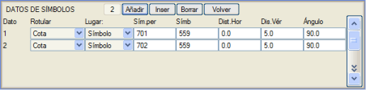
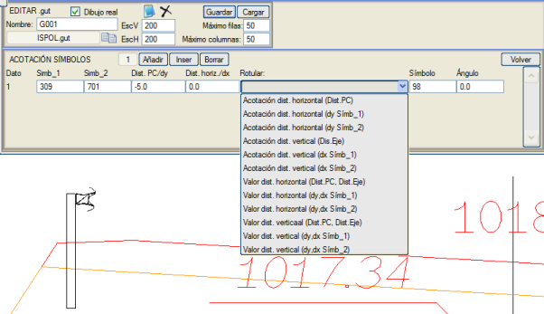
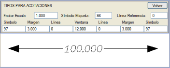

| |
|
ENKESİT PAFTALARI İÇİN ŞABLONLAR: SEMBOLLER
|
Enkesitte bulunan semboller için, aşağıda açıklanan alt menüleri kullanarak bazı verileri göstermek de mümkündür. Sembol Verileri Sembol verilerini temsil eden semboller, sembolün kotu olarak km değeri ve temsil edilecek değer (kot, eksene mesafe,...) öznitelik olarak geçirilerek paftaya eklenir, böylece paftalarda etiketlenir. Bu şekilde, Semboller düzenleme menüsünün MD seçeneğinden bir sembol listesi yaparsak; her tip için bir liste elde ederiz: X,Y,KM,Karakteristik_Kot. Enkesitlerde bulunan sembollerin aşağıdaki özelliklerini etiketlemeyi sağlayan bir diyalog kutusu açar: 
Semboller Arası Ölçülendirme Smb_1 ve Smb_2 sembol tipleri arasındaki ölçülendirmeyi belirtilen karşılaştırma düzlemine olan mesafede çizmeyi sağlar. 
Aşağıdaki olanakları sunar:
Ölçülendirme Tipleri Bu seçenek, ölçülendirmeler için kullanılan sembol ve çizgi tiplerini tanımlamayı sağlayan bir diyalog kutusu gösterir. 
Sembollerin Gösterimi Bu seçenekle, bir enkesit sembolünün orijinal çizimini (Senk sütununda belirtilir) şunlarla değiştirebiliriz:
|